★HARDWARE Manual
★SCSPユーザーズマニュアル
★HARDWARE Manual
★SCSPユーザーズマニュアル
最新サンプル ．．．．． ２０Ｈ 過去のサンプル ．．．． ００Ｈ
最新サンプル ．．．．． １ＦＨ 過去のサンプル ．．．． ３ＦＨ
最新サンプル ．．．．． １ＥＨ 過去のサンプル ．．．． ３ＥＨ
最新サンプル ．．．．． １ＦＨ 過去のサンプル ．．．． ３ＦＨ
MDXSL・MDYSL キャリアスロット番号 パラメータ値 00 01 02 03 04 05 06 07 08 09 10 11 12 13 14 15 (SAMPLE) 最新 過去 モジュレーションスロット番号 SLOT 00〜31 20H 00H 00 01 02 03 04 05 06 07 08 09 10 11 12 13 14 15 21H 01H 01 02 03 04 05 06 07 08 09 10 11 12 13 14 15 16 22H 02H 02 03 04 05 06 07 08 09 10 11 12 13 14 15 16 17 23H 03H 03 04 05 06 07 08 09 10 11 12 13 14 15 16 17 18 24H 04H 04 05 06 07 08 09 10 11 12 13 14 15 16 17 18 19 25H 05H 05 06 07 08 09 10 11 12 13 14 15 16 17 18 19 20 26H 06H 06 07 08 09 10 11 12 13 14 15 16 17 18 19 20 21 27H 07H 07 08 09 10 11 12 13 14 15 16 17 18 19 20 21 22 28H 08H 08 09 10 11 12 13 14 15 16 17 18 19 20 21 22 23 29H 09H 09 10 11 12 13 14 15 16 17 18 19 20 21 22 23 24 2AH 0AH 10 11 12 13 14 15 16 17 18 19 20 21 22 23 24 25 2BH 0BH 11 12 13 14 15 16 17 18 19 20 21 22 23 24 25 26 2CH 0CH 12 13 14 15 16 17 18 19 20 21 22 23 24 25 26 27 2CH 0DH 13 14 15 16 17 18 19 20 21 22 23 24 25 26 27 28 2EH 0EH 14 15 16 17 18 19 20 21 22 23 24 25 26 27 28 29 2FH 0FH 15 16 17 18 19 20 21 22 23 24 25 26 27 28 29 30 30H 10H 16 17 18 19 20 21 22 23 24 25 26 27 28 29 30 31 31H 11H 17 18 19 20 21 22 23 24 25 26 27 28 29 30 31 00 32H 12H 18 19 20 21 22 23 24 25 26 27 28 29 30 31 00 01 33H 13H 19 20 21 22 23 24 25 26 27 28 29 30 31 00 01 02 34H 14H 20 21 22 23 24 25 26 27 28 29 30 31 00 01 02 03 35H 15H 21 22 23 24 25 26 27 28 29 30 31 00 01 02 03 04 36H 16H 22 23 24 25 26 27 28 29 30 31 00 01 02 03 04 05 37H 17H 23 24 25 26 27 28 29 30 31 00 01 02 03 04 05 06 38H 18H 24 25 26 27 28 29 30 31 00 01 02 03 04 05 06 07 39H 19H 25 26 27 28 29 30 31 00 01 02 03 04 05 06 07 08 3AH 1AH 26 27 28 29 30 31 00 01 02 03 04 05 06 07 08 09 3BH 1BH 27 28 29 30 31 00 01 02 03 04 05 06 07 08 09 10 1CH 3CH 28 29 30 31 00 01 02 03 04 05 06 07 08 09 10 11 1DH 3DH 29 30 31 00 01 02 03 04 05 06 07 08 09 10 11 12 1EH 3EH 30 31 00 01 02 03 04 05 06 07 08 09 10 11 12 13 1FH 3FH 31 00 01 02 03 04 05 06 07 08 09 10 11 12 13 14
MDXSL・MDYSL キャリアスロット番号 パラメータ値 16 17 18 19 20 21 22 23 24 25 26 27 28 29 30 31 (SAMPLE) 最新 過去 モジュレーションスロット番号 SLOT 00〜31 20H 00H 16 17 18 19 20 21 22 23 24 25 26 27 28 29 30 31 21H 01H 17 18 19 20 21 22 23 24 25 26 27 28 29 30 31 00 22H 02H 18 19 20 21 22 23 24 25 26 27 28 29 30 31 00 01 23H 03H 19 20 21 22 23 24 25 26 27 28 29 30 31 00 01 02 24H 04H 20 21 22 23 24 25 26 27 28 29 30 31 00 01 02 03 25H 05H 21 22 23 24 25 26 27 28 29 30 31 00 01 02 03 04 26H 06H 22 23 24 25 26 27 28 29 30 31 00 01 02 03 04 05 27H 07H 23 24 25 26 27 28 29 30 31 00 01 02 03 04 05 06 28H 08H 24 25 26 27 28 29 30 31 00 01 02 03 04 05 06 07 29H 09H 25 26 27 28 29 30 31 00 01 02 03 04 05 06 07 08 2AH 0AH 26 27 28 29 30 31 00 01 02 03 04 05 06 07 08 09 2BH 0BH 27 28 29 30 31 00 01 02 03 04 05 06 07 08 09 10 2CH 0CH 28 29 30 31 00 01 02 03 04 05 06 07 08 09 10 11 2DH 0DH 29 30 31 00 01 02 03 04 05 06 07 08 09 10 11 12 2EH 0EH 30 31 00 01 02 03 04 05 06 07 08 09 10 11 12 13 2FH 0FH 31 00 01 02 03 04 05 06 07 08 09 10 11 12 13 14 30H 10H 00 01 02 03 04 05 06 07 08 09 10 11 12 13 14 15 31H 11H 01 02 03 04 05 06 07 08 09 10 11 12 13 14 15 16 32H 12H 02 03 04 05 06 07 08 09 10 11 12 13 14 15 16 17 33H 13H 03 04 05 06 07 08 09 10 11 12 13 14 15 16 17 18 34H 14H 04 05 06 07 08 09 10 11 12 13 14 15 16 17 18 19 35H 15H 05 06 07 08 09 10 11 12 13 14 15 16 17 18 19 20 36H 16H 06 07 08 09 10 11 12 13 14 15 16 17 18 19 20 21 37H 17H 07 08 09 10 11 12 13 14 15 16 17 18 19 20 21 22 38H 18H 08 09 10 11 12 13 14 15 16 17 18 19 20 21 22 23 39H 19H 09 10 11 12 13 14 15 16 17 18 19 20 21 22 23 24 3AH 1AH 10 11 12 13 14 15 16 17 18 19 20 21 22 23 24 25 3BH 1BH 11 12 13 14 15 16 17 18 19 20 21 22 23 24 25 26 1CH 3CH 12 13 14 15 16 17 18 19 20 21 22 23 24 25 26 27 1DH 3DH 13 14 15 16 17 18 19 20 21 22 23 24 25 26 27 28 1EH 3EH 14 15 16 17 18 19 20 21 22 23 24 25 26 27 28 29 1FH 3FH 15 16 17 18 19 20 21 22 23 24 25 26 27 28 29 30
図4.32 MDL変調度
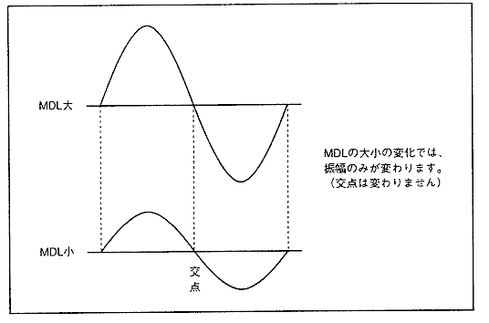
ＺＤ ＝ ( ＸＤ ＋ ＹＤ ) ÷ ２
図4.33 波形読み出しアドレスによる最大変位
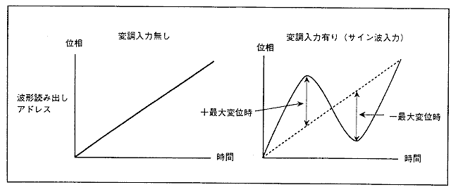
| MDL[3:0] | 0〜4 | 5 | 6 | 7 | 8 | 9 | A | B | C | D | E | F |
アドレス最大変位± | 0 | 32 | 64 | 128 | 256 | 512 | 1024 | 2048 | 4096 | 8192 | 16384 | 32768 |
図4.34 ＦＭ合成時のアドレス変位
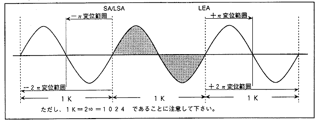
図4.35 クリッピング処理時のウェーブデータ
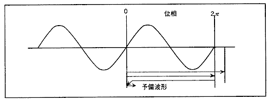
図4.36 スロットの接続数
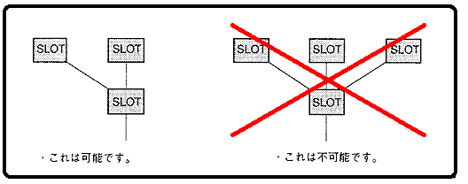
図4.37 セルフフィードバック変調
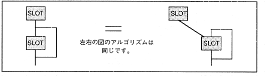
| 図4.38 多段フィードバック 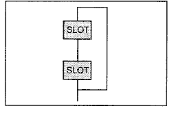 |
図4.39 複合フィードバック 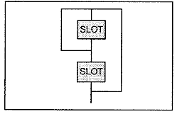 |
図4.40 複合変調
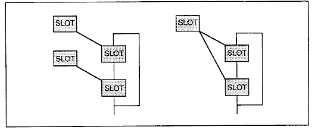
図4.41 FM構成アルゴリズムパターン１
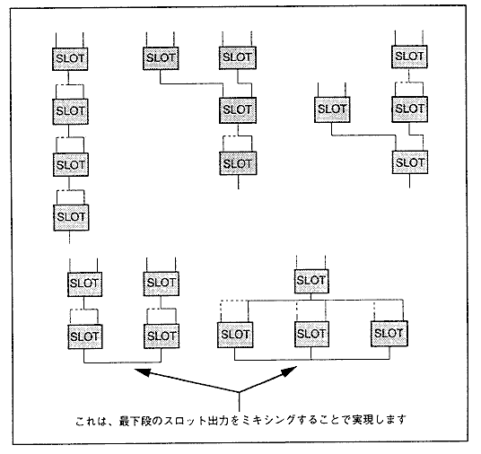
図4.42 FM構成アルゴリズムパターン２
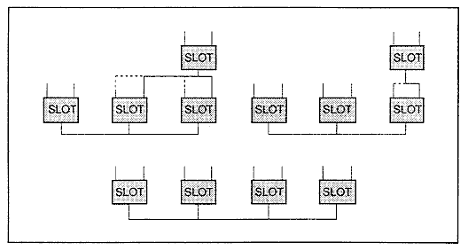
図4.43 7スロット ＦＭ構成
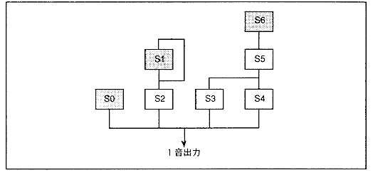
★HARDWARE Manual
★SCSPユーザーズマニュアル